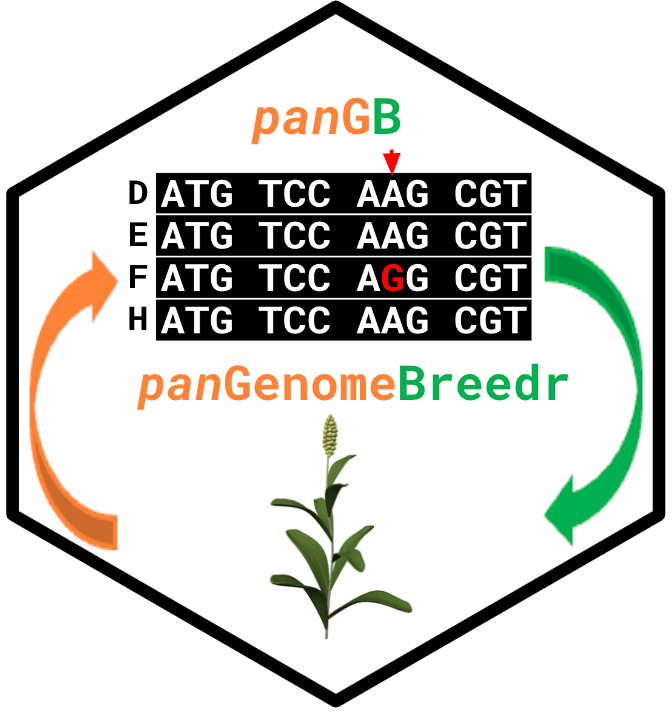

Extract variants based on allele frequencies within a genomic region
Source:R/api_wrappers.R
pg_query_by_af.RdThis function connects to the public panGenomeBreedr API to query genotypes within a specific genomic range and filters the results to only include variants within the specified alternate allele frequency (AF) thresholds.